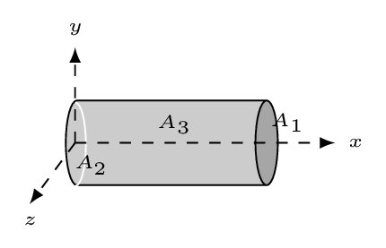
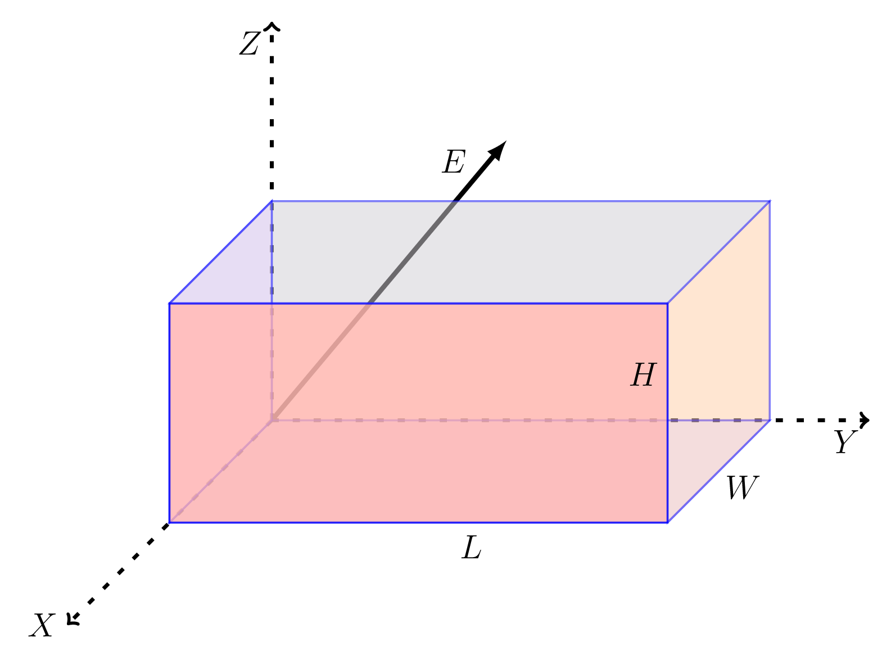

Skip to main content ☰ Contents Index You! < Prev ^ Up Next > \(\newcommand{\N}{\mathbb N}
\newcommand{\Z}{\mathbb Z}
\newcommand{\Q}{\mathbb Q}
\newcommand{\R}{\mathbb R}
\newcommand{\T}{\mathcal T}
\newcommand\comb[2]{^{#1}C{_{#2}}}
\newcommand{\lt}{<}
\newcommand{\gt}{>}
\newcommand{\amp}{&}
\definecolor{fillinmathshade}{gray}{0.9}
\newcommand{\fillinmath}[1]{\mathchoice{\colorbox{fillinmathshade}{$\displaystyle \phantom{\,#1\,}$}}{\colorbox{fillinmathshade}{$\textstyle \phantom{\,#1\,}$}}{\colorbox{fillinmathshade}{$\scriptstyle \phantom{\,#1\,}$}}{\colorbox{fillinmathshade}{$\scriptscriptstyle\phantom{\,#1\,}$}}}
\)
Section 1.5 Examples B
Electric Flux.
Example 1.5.1 .
A uniform electric field of strength \(E = 100 \,N/C\) is directed along the +x - axis through a cylinder of length 1 m and radius 0.2 m. If the cylinder is aligned along the x -axis what is the electric flux through each of its three surfaces? What is the total flux through the surface of the cylinder?
Solution .

Given: \(E = 100 \,N/C;\quad L = 1 \,m; \quad r = 0.2 \,m. \)
\begin{equation*}
\text{Area of the caps}\quad A_{1}=\pi r^{2} = A_{2} =0.1257 \,m^{2}
\end{equation*}
\begin{equation*}
\text{Area of the cylindrical surface}\quad A_{3} =2 \pi r L =1.257 \,m^{2}
\end{equation*}
\begin{equation*}
\text{Now,}\quad \Phi_{1} = \int\vec{E}\cdot\vec{dA} = EA_{1} =12.5 \,Nm^{2}/C
\end{equation*}
\begin{equation*}
\Phi_{2} = \int \vec{E}\cdot \vec{\,dA}= - \int E \,dA = -EA_{2} = -12.5 \,Nm^{2}/C
\end{equation*}
\begin{equation*}
\Phi_{3} = \vec{E}\cdot \vec{A_{3}} = 0
\end{equation*}
\begin{equation*}
\therefore\quad \Phi_{T} =\Phi_{1}+\Phi_{2}+\Phi_{3}=0
\end{equation*}
Example 1.5.2 .
A uniform electric field
\begin{equation*}
E = 30 N/C \hat{i}+ 40 N/C \hat{j}
\end{equation*}
is directed through a rectangular object of length 3 m along the x-axis, of height 2 m along the y-axis, and of width 1 m along the z-axis. What are the electric fluxes through the surfaces located at
\(\displaystyle x = 3 \,m,\)
\(\displaystyle x = 0,\)
\(\displaystyle y = 2 \,m,\)
\(\displaystyle y = 0,\)
\(\displaystyle z = 1 \,m,\)
\(\displaystyle z = 0? \)
Solution .

Given:
\begin{equation*}
E = 30 N/C \hat{i}+ 40 N/C \hat{j};
\end{equation*}
\(L = 3 \,m; \quad W = 1 \,m;\quad H = 2 \,m. \)
\begin{equation*}
\Phi = \int\vec{E}\cdot\vec{dA} = \int E\,dA\cos\theta
\end{equation*}
\(\displaystyle A_{x}=WH\hat{i};\quad \Phi_{1}=EA_{x}= 60 \,N m^{2}/C\)
\(\displaystyle A_{-x}=WH(-\hat{i});\quad \Phi_{2}=EA_{-x}= -60 \,N m^{2}/C\)
\(\displaystyle A_{y}=LW\hat{j}; \quad \Phi_{3}= EA_{y}= 120 \,Nm^{2}/C \)
\(\displaystyle A_{-y}=LW(-\hat{j}); \quad \Phi_{4}= EA_{-y}= - 120 \, Nm^{2}/C\)
\(\displaystyle A_{z}=KH\hat{k}; \quad \Phi_{5}= EA_{z}= 0 \)
\(\displaystyle A_{-z}=LH(-\hat{k}); \quad \Phi_{6}= EA_{-z}= 0 \)
Example 1.5.3 .
An electric field is given by the equation
\begin{equation*}
\vec{E} = 2yz\hat{i} + 3xz\hat{j} - 4xy\hat{k},
\end{equation*}
in the MKS system. What is the electric flux through a surface whose corners are at (0,0,0), (0,1,0), (0,1,2), and (0,0,2)?
Solution .
\begin{equation*}
\vec{\,dA}=dydz\hat{i}
\end{equation*}
\(\because\) surface is in the y,z plane.
\begin{equation*}
\Phi_{E}=\int\vec{E}\cdot\vec{\,dA}=\int E_{x}\,dA_{yz} =\iint 2yz \,dy \,dz = \int\limits_{0}^{2}\left(\int\limits_{0}^{1}2yz\,dy\right)\,dz
\end{equation*}
\begin{equation*}
= \int\limits_{0}^{2}z\left(\int\limits_{0}^{1}2y\,dy\right)\,dz
\end{equation*}
\(\because z \) is independent of \(y.\)
\begin{equation*}
=\int\limits_{0}^{2}z\left.\left(y^{2}\right\vert_{0}^{1} \right)\,dz = \int\limits_{0}^{2}z \,dz
= \left.\frac{z^{2}}{2}\right\vert_{0}^{2} =2 Nm^{2}/C
\end{equation*}